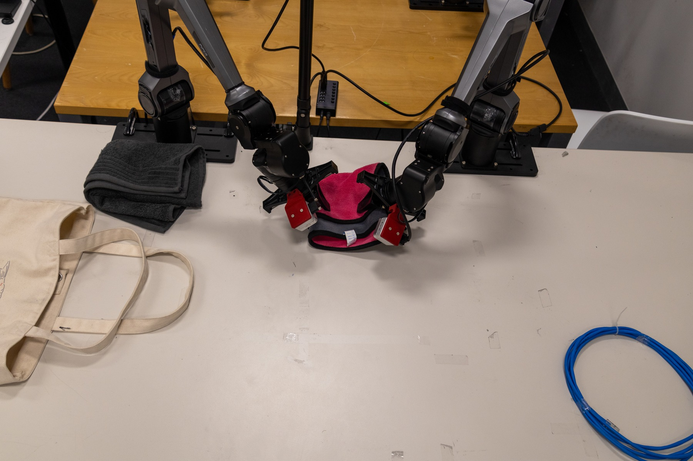
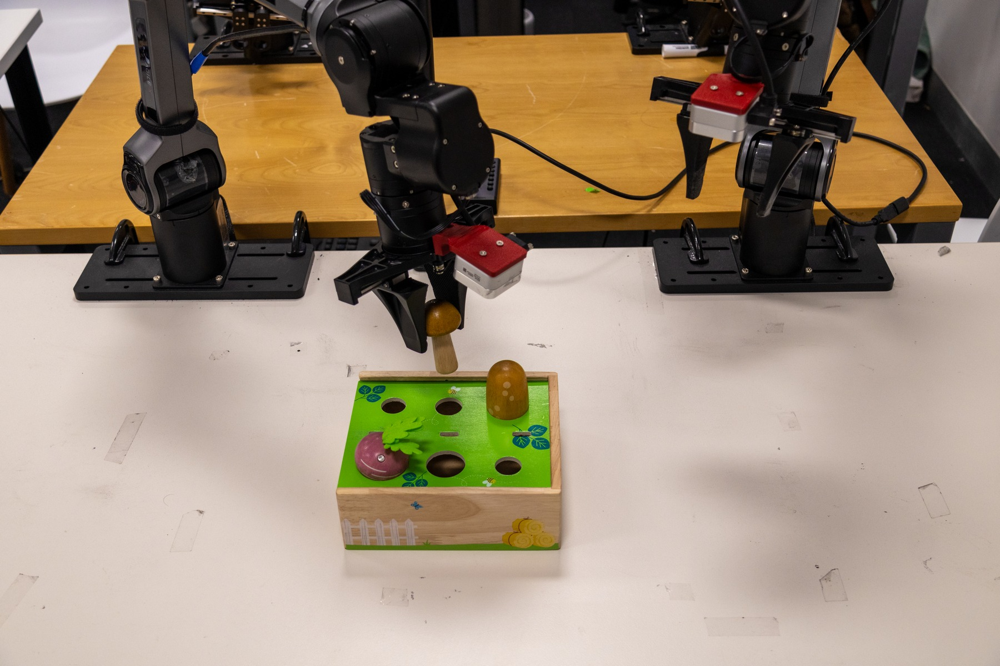
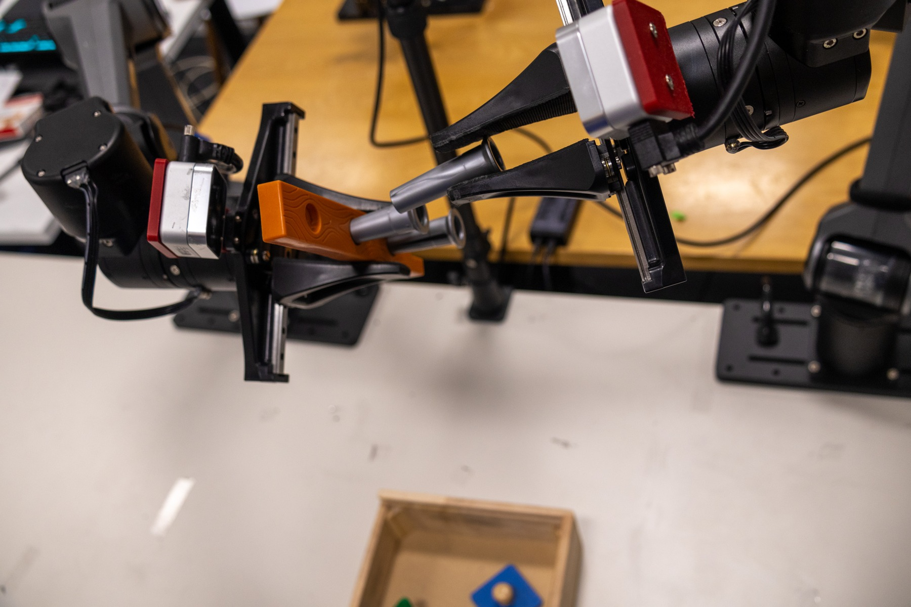

Construct
Pair current visual embeddings with the policy's proposed action chunk.
Robot Learning · Interactive Imitation Learning
AutoIntervene selectively transfers control between a visuomotor policy and an operator, turning targeted recovery into supervision for the next policy update.

Overview
Action-chunking policies can produce smooth actions even after perception error or execution drift moves the robot outside demonstrated support. AutoIntervene evaluates proposed chunks against a visual-action memory of successful task executions. Phase-local support triggers policy-to-operator transfer; global support enables autonomous operation to resume after recovery.
Method
Separate switching thresholds are calibrated from held-out expert demonstrations, avoiding direct manual tuning of score cutoffs.

Pair current visual embeddings with the policy's proposed action chunk.
Measure visual support and action risk against successful references.
Select policy or operator control using calibrated acceptance criteria.
Retain successful intervention segments as targeted corrective data.
Experiments
AutoIntervene is evaluated with ACT, Diffusion Policy, and Flow Matching action heads across tasks involving deformable objects, containers, sorting, transfer, and disassembly.



Key result
Across real-world bimanual tasks, targeted intervention trajectories support iterative policy improvement with less operator-control time than collecting additional full demonstrations.
View complete results in the paper →Citation
@article{autointervene2026,
title = {AutoIntervene: Calibrated Intervention for
Action-Chunking Imitation Learning Policies},
year = {2026}
}Author and publication metadata will be updated when finalized.